Welcome to Sumo Slap Down, the ultimate hub for fantasy sumo! I built this site because my sumo-addicted family and friends wanted a single, one-stop shop to analyze rikishi, simulate upcoming basho, and customize private fantasy leagues.
A quick, interactive tour of the sport — the ranks, how a bout is won, the winning moves, and a short quiz to test yourself.
Creators and shows we love. If you're getting into sumo, start here — these folks make the sport a joy to follow.